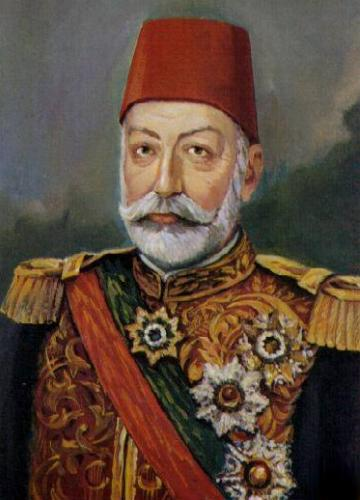

|
 |
V.MEHMET II. Mahmut'un torunudur. 18 oğlu ve 24 kızı olan Sultan Abdülmecit'in yaş sırasına göre üçüncü oğluydu. Annesi Gülcemal Kadın Efendi'dir. Eski Çırağan Sarayı'nda doğdu. Annesi Gülcemal Kadın Efendi veremden öldüğü zaman Mehmed Reşat 7 yaşındaydı. Çocukluğu, padişah olan babasının yanında geçti. Eğitimine fazla önem verilmedi. Babası ve amcası Sultan Abdülaziz saltanat yıllarında özgür ve rahat bir şehzadelik yaptı. 1872'de başkadını olan Kamures ile "izdivaç" yapıp , "aile" kuran Osmanlı sahzadeleri arasına girdi. 1876-1909 ağabeyi II. Abdülhamit döneminde, veliahtlık yapmasına rağmen, Dolmabahçe Sarayı'nın Veliahtlık Dairesinde kapalı hayat yaşamak zorunda kaldı. Veliaht olduğu için devamlı kontrol altında tutuluyordu. Seyrek olarak Balmumcu Çiftliği'ne gitmesine izin verilmekteydi. Ama başkalarıyla görüşmesi ve İstanbul'da gezinmesi yasaklanmıştı. Gözlerinin mavi olduğu Mehmed Reşat'ın kendine nazar değireceğinden korkan vesveseli ağabeyi II. Abdülhamid onunla karşı karşıya görüşmekten kaçınmış olduğu belirtilmektedir. Günlerini haremde geçirir; Dürr-i And, Mihr-engiz adlı kadinefendileri ve Ziyaeddin, Necmeddin, Ömer Hilmi adlı şehzadeleriyle ilgilenip eğlenirdi. Fars edebiyatına, Mevlevilik konularına ve özellikle Mesnevi'ye yakın ilgisi vardı ve şiir ve diğer kitaplar da okurdu. [2] 1908'de İkinci Meşrutiyet'in ilanından sonra Veliahd olarak prototolkola göre "Devletû Necabetû Veliahd-ı Saltanat Reşat Efendi Hazretleri" şeref adını kullanarak törenlere iştirak etmeye başladı. Halk arasında güler yüzü ve sıcak bakışı ile sempati topladı. Onun bu popülerliğinden hoşlanmayan ağabeyi II. Abdülhamid'in verdiği bir Yıldız Sarayı davetinde onun yakasından tutup "Bu işler senin başının altından çıkıyor" dediği belgelenmiştir. |